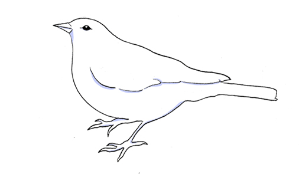
Paseriformes
Patas de 4 dedos independientes 3 hacia adelante y otro hacia atrás. Cuello y patas cortas. Generalmente de pequeño tamaño. Ubican sus nidos a ras del suelo y máximo a 3 metros de altura, clasifican como “aves presa”. Paseriformes con probabilidad de avistamiento en área de estudio: (22).Chirihue - Chercán - Chercán de la vega - Viudita - Colegial común - Trile común - Tijeral - Dormilona chica - Dormilona tontita - Chincol - Rayadito - Mero - Tordo - Diucón - Diuca - Cachudito - Tenca - Comesebo grande - Churrin - Chucao - Jilguero - Remolinera chica (vulnerable).
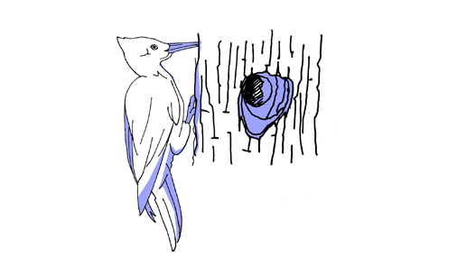
Piciformes
Cuerpo compacto, pico en forma cónica de apariencia fuerte, cabeza de gran tamaño en relación al cuerpo. Destaca el copete en su cabeza y su caracteristica posición vertical en los troncos de los árboles. Se alimenta de larvas e insectos, los cuales busca con su pico haciendo grandes agujeros en los troncos. Nidifica en árboles altos y viejos, principalmente araucaria y en agujeros que ellos mismos taladran con su pico, por lo que es poco probable avistar un nido. Piciformes con probabilidad de avistamiento en área de estudio: (2) Carpintero negro (en peligro)-Carpinterito.
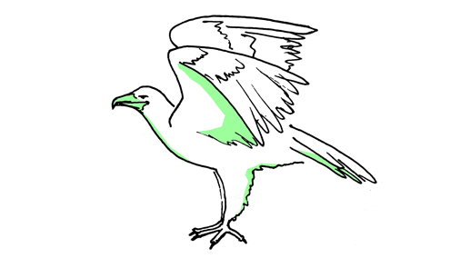
Falconiformes
Semejantes al halcón. Pico engarfiado, cabeza achatada, cola larga, alas voluminosas y mirada amenazante. Poseen grandes patas con uñas afiladas. Nidifica en lugares medianamente altos. Falconiformes con probabilidad de avistamiento en área de estudio: (4) Tiuque-Cernícalo-Halcón peregrino-Traro.
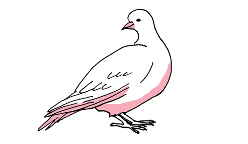
Columbiformes
Similares a las palomas. Cuerpo robusto y compacto, cabeza pequeña en relación al cuerpo y con pico pequeño. Nidifica en árboles no muy altos. Construyen nidos básicos con ramas y plumas. Columbiformes con probabilidad de avistamiento en área de estudio: (4) Tórtola cordillerana-Cachaña-Torcaza-Tórtola
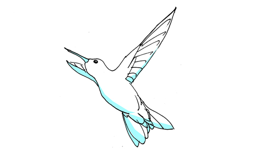
Apodiformes
Tamaño pequeño, pico largo y fino. Se caracteriza por su vuelo y aleteo rápido y movimientos ágiles. Nidifican en la copa de los árboles o en arbustos. Apodiformes con probabilidad de avistamiento en área de estudio: (1) Picaflor.
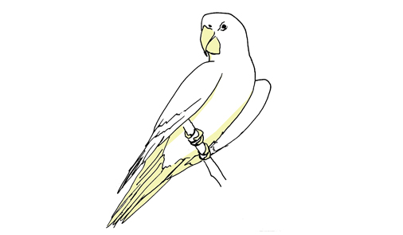
Psitaciformes
Cuerpo robusto y compacto, cabeza y cuello anchos, pico de gran tamaño, achatado y encorvado. Destacan por su plumaje de colores llamativos y su cola larga. Nidifica en lugares bastante altos. Por lo que es poco probable ver un nido. Psitaciformes con probabilidad de avistamiento en el área de estudio: (1) Choroy.
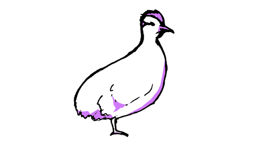
Tinamiformes
Cuerpo robusto y voluminoso en comparación con su cabeza, la cual es mas bien pequeña. Distinguen su pico agudo, copete de plumas, ausencia de cola y tamaño menor al de una gallina común. Nidifica a raz del suelo, regularmente bajo arbustos. Habita praderas y campos. Tinamiformes con probabilidad de avistamiento en área de estudio: (1)Perdiz chilena
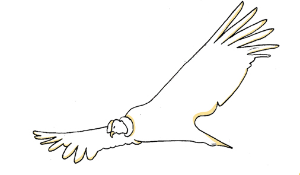
Catartiformes
Tamaño medio a grande. Pico de borde cortante y en gancho. Alas largas y anchas. Presencia de cresta. Carroñeros.Viven en alturas y fabrican sus nidos en cuevas o en lugares rocosos. Catartiformes con probabilidad de avistamiento en el área de estudio: (2) Cóndor - Jote cabeza negra.
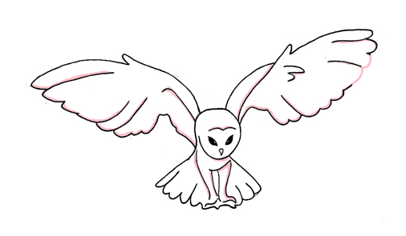
Strigiformes
Rapaces nocturnas. Sus dedos se separan de dos en dos. Su pico es ganchudo con base cubierta de una cera. Sus ojos y oídos son característicos. Nidifican en las alturas, en huecos de árboles. Strigiformes con probabilidad de avistamiento en el área de estudio: (3) Pequén - Chuncho - Lechuza.
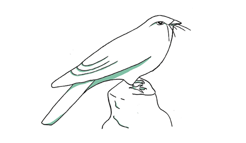
Caprimulgiformes
Plumaje mimético con el ambiente escorial. Alas y cola larga. Patas poco desarrolladas. Ubican sus nidos en lugares abiertos. Caprimulgiformes con probabilidad de avistamiento en el área de estudio: (1)Gallinita ciega
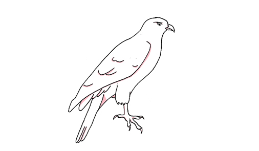
Accipitriformes
Rapaces diurnas. Tamaño grande. Pico fuerte y curvado. Garras fuertes y afiladas. Ubican sus nidos en zonas altas como copas de árboles. Accipitriformes con probabilidad de avistamiento en el área de estudio: (5) Águila chilena - Peuco - Peuquito - Aguilucho- Vari.
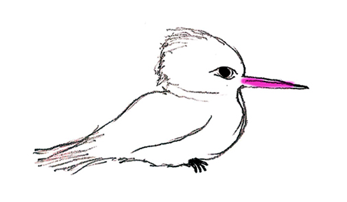
Coraciformes
Tamaño grande a mediano. Patas de tres dedos, dos hacia adelante y uno hacia atrás ("pinza"). Alas cortas y redondeadas o largas. Coraciformes con probabilidad de avistamiento en el área de estudio: (1) Martin pescador.